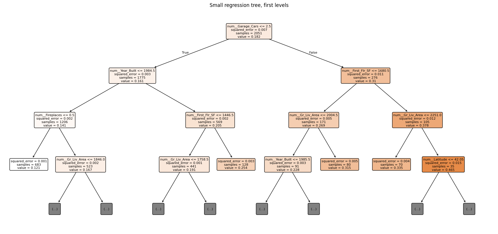

Decision trees, bagging and random forests with scikit-learn
This lab reproduces, in Python, the same statistical learning workflow used in the R lab on tree-based ensemble methods. We will work with the Ames housing data and try to predict Sale_Price from the remaining variables.
The main goal is not to obtain exactly the same numerical results as in R. Different implementations use different defaults, different internal algorithms, and, most importantly, Python requires explicit encoding of categorical variables. The goal is to reproduce the same ideas:
Fit a single regression tree.
Study the effect of tree complexity.
Use cost-complexity pruning.
Fit a bagged ensemble of trees.
Use out-of-bag predictions to estimate prediction error.
Fit and tune a random forest.
Compare models using RMSE.
Interpret variable importance carefully after one-hot encoding.
1. Required packages
We will use the standard Python scientific stack and scikit-learn.
The main difference with the R version is that R packages such as tree, rpart, and randomForest can work directly with factors. In scikit-learn, categorical variables must be converted into numerical variables before fitting the model. We will do this using a Pipeline and a ColumnTransformer, so that the preprocessing is fitted only on the training data and then applied consistently to the test data.
# =========================================================# Setup: install required packages if they are missing# =========================================================import sysimport subprocessimport importlibrequired_packages = ["numpy","pandas","matplotlib","scikit-learn","jupyter"]for package in required_packages:try: importlib.import_module(package.replace("-", "_"))exceptImportError:print(f"Installing {package}...") subprocess.check_call([sys.executable, "-m", "pip", "install", package])print("All required packages are available.")
Installing scikit-learn...
All required packages are available.
We define a small helper function to compute RMSE. We avoid using version-specific shortcuts so that the code works in most recent scikit-learn installations.
def rmse(y_true, y_pred):"""Root mean squared error."""return np.sqrt(mean_squared_error(y_true, y_pred))def make_onehot_encoder():"""Create a OneHotEncoder compatible with different scikit-learn versions.""" params = inspect.signature(OneHotEncoder).parametersif"sparse_output"in params:return OneHotEncoder(handle_unknown="ignore", sparse_output=False)else:return OneHotEncoder(handle_unknown="ignore", sparse=False)def make_bagging_regressor(base_estimator, **kwargs):"""Create a BaggingRegressor compatible with old and new scikit-learn versions.""" params = inspect.signature(BaggingRegressor).parametersif"estimator"in params:return BaggingRegressor(estimator=base_estimator, **kwargs)else:return BaggingRegressor(base_estimator=base_estimator, **kwargs)
2. The dataset
This notebook assumes that the data have been exported from R as a CSV file named AmesHousing1.csv.
3. Exploratory data analysis and response transformation
Let us inspect the first rows and the variable types. When the dataset is read from a CSV file, categorical variables are usually read as object columns, while numerical variables are read as numeric columns.
The response variable is Sale_Price. As in the R lab, we express it in thousands of dollars. This does not change the structure of the prediction problem, but it makes RMSE values easier to interpret.
For example, an RMSE of 25 means approximately 25,000 dollars.
ames["Sale_Price"].describe()
count 2930.000000
mean 180796.060068
std 79886.692357
min 12789.000000
25% 129500.000000
50% 160000.000000
75% 213500.000000
max 755000.000000
Name: Sale_Price, dtype: float64
plt.figure(figsize=(7, 4))plt.hist(ames["Sale_Price"], bins=40)plt.xlabel("Sale_Price")plt.ylabel("Frequency")plt.title("Distribution of sale prices")plt.show()
count 2930.000000
mean 180.796060
std 79.886692
min 12.789000
25% 129.500000
50% 160.000000
75% 213.500000
max 755.000000
Name: Sale_Price, dtype: float64
The distribution of the variable is asymetrical so we may also consider taking logarithm, but given that it would complicate the interpretation of the results, and that something like normality is not required by the methods we use, only division by 1000 is performed.
ames["Sale_Price"] = ames["Sale_Price"] /1000
4. Train/test split
We split the data into training and test sets. The R lab uses stratified sampling on the numerical response. train_test_split cannot directly stratify by a continuous variable, so we create bins of Sale_Price and stratify on those bins.
This is not essential for large datasets, but it helps ensure that the training and test sets contain a similar range of prices.
y = ames["Sale_Price"]X = ames.drop(columns="Sale_Price")# Create response bins for approximate stratificationprice_bins = pd.qcut(y, q=5, duplicates="drop")X_train, X_test, y_train, y_test = train_test_split( X, y, test_size=0.30, random_state=RANDOM_STATE, stratify=price_bins)X_train.shape, X_test.shape
5. Preprocessing: numerical and categorical variables
Tree-based methods do not require scaling of numerical variables. However, scikit-learn cannot directly use string-valued categorical variables in DecisionTreeRegressor, BaggingRegressor, or RandomForestRegressor.
We therefore use:
numerical predictors: passed through unchanged;
categorical predictors: one-hot encoded.
This is done inside a Pipeline, not manually before the split. This is the recommended workflow because it ensures that the categories are learned from the training set and then applied to the test set. The option handle_unknown="ignore" prevents errors if a category appears in the test set but was not present in the training set.
# ColumnTransformer allows us to apply different preprocessing steps# to different types of variables (e.g. one-hot encoding for categorical# variables while leaving numerical variables unchanged).preprocess = ColumnTransformer( transformers=[ ("num", "passthrough", numeric_features), ("cat", make_onehot_encoder(), categorical_features) ], remainder="drop")
6. A first regression tree
We start with a relatively small regression tree. This plays the same role as the first, interpretable tree in the R lab.
Because the one-hot encoded data may contain many dummy variables, a completely unrestricted tree can become very large. We therefore control complexity using max_leaf_nodes, min_samples_split, and min_samples_leaf.
The plot below is useful for teaching, but it is less readable than the equivalent R plot because one-hot encoding creates variables such as Neighborhood_North_Ames. We plot only a small tree for interpretability.
# Recover fitted preprocessing and model objectsfitted_preprocess = small_tree.named_steps["preprocess"]fitted_tree = small_tree.named_steps["model"]feature_names = fitted_preprocess.get_feature_names_out()plt.figure(figsize=(22, 10))plot_tree( fitted_tree, feature_names=feature_names, filled=True, rounded=True, max_depth=3, fontsize=8)plt.title("Small regression tree, first levels")plt.show()

7. A deeper tree
A single decision tree can reduce training error by growing deeper, but this often increases variance and may hurt prediction on new observations. We now fit a much deeper tree.
The deep tree usually has a much smaller training error. This is expected: a very flexible tree can adapt very closely to the training set. The relevant question is whether this flexibility improves test error.
In CART, pruning can be formulated as minimizing a penalized criterion of the form
\[
R_\alpha(T) = R(T) + \alpha |T|,
\]
where \(R(T)\) is the training loss of tree \(T\), \(|T|\) is a measure of tree size, usually the number of terminal nodes, and \(\alpha \geq 0\) controls the penalty for complexity.
In scikit-learn, this penalty is controlled by the parameter ccp_alpha. Larger values of ccp_alpha produce smaller trees.
To choose ccp_alpha, we use cross-validation on the training set. The test set is kept only for final assessment.
# First fit the preprocessor on the training set and transform train/test data.# This is useful for obtaining the cost-complexity pruning path.preprocess_for_pruning = ColumnTransformer( transformers=[ ("num", "passthrough", numeric_features), ("cat", make_onehot_encoder(), categorical_features) ], remainder="drop")X_train_enc = preprocess_for_pruning.fit_transform(X_train)X_test_enc = preprocess_for_pruning.transform(X_test)base_tree_for_path = DecisionTreeRegressor(random_state=RANDOM_STATE)path = base_tree_for_path.cost_complexity_pruning_path(X_train_enc, y_train)ccp_alphas = path.ccp_alphas# Remove the largest alpha, which usually corresponds to the root-only treeccp_alphas = ccp_alphas[:-1]len(ccp_alphas), ccp_alphas[:5], ccp_alphas[-5:]
We collect the results obtained so far. Notice that single trees may be unstable: small changes in the training data can lead to different splits and different trees.
The key lesson is not that one specific tree is always best, but that individual trees tend to have high variance. This motivates ensemble methods.
Bagging reduces variance by averaging predictions over many trees fitted to bootstrap samples of the training data. Random forests add a second source of randomness by considering only a subset of predictors at each split.
10. Bagging regression trees
Bagging builds many trees on bootstrap samples of the training data and averages their predictions.
In scikit-learn, we can implement bagging explicitly using BaggingRegressor with DecisionTreeRegressor as the base estimator.
We also request out-of-bag predictions by setting oob_score=True. For each training observation, the OOB prediction is obtained by averaging only the trees where that observation was not included in the bootstrap sample.
The fitted BaggingRegressor stores one OOB prediction for each training observation. These predictions behave like predictions on an internal validation set.
They are not computed using the test set. Therefore, the OOB error is useful when we want an estimate of prediction error without setting aside an additional validation sample.
bagging_estimator = bagging.named_steps["model"]oob_pred_bag = bagging_estimator.oob_prediction_# In rare cases, an observation may have no OOB prediction if the number of trees is very small.# With 100 trees this should almost never happen, but we keep the check for safety.valid_oob =~np.isnan(oob_pred_bag)oob_rmse_bag = rmse(y_train.iloc[valid_oob], oob_pred_bag[valid_oob])oob_rmse_bag, bagging_estimator.oob_score_
The training RMSE is usually much smaller than the OOB and test RMSE. This is expected: the fitted ensemble has seen the training observations many times. The OOB error is a more honest internal estimate of prediction error.
11. Random forests
A random forest modifies bagging by randomly selecting only a subset of candidate predictors at each split. This tends to reduce correlation between trees, making the average more effective.
In regression, a common default is to consider approximately one third of the predictors at each split. In scikit-learn, the default has changed across versions, so we explicitly set max_features in the tuning section below. First, we fit a simple random forest with reasonable defaults.
The two most important tuning parameters here are:
n_estimators: the number of trees;
max_features: the number or proportion of predictors considered at each split.
In Python, after one-hot encoding, the number of input columns can be larger than in the original data. For this reason, using exact values such as 18, 24, or 37 does not have exactly the same meaning as in the R lab. We use proportions instead.
The following grid is deliberately small so that the lab runs in a reasonable time.
In a Jupyter environment, please rerun this cell to show the HTML representation or trust the notebook. On GitHub, the HTML representation is unable to render, please try loading this page with nbviewer.org.
We now compare all fitted models. The exact numerical values may differ from the R lab, but the general pattern should be similar: ensembles usually reduce test error substantially compared with a single tree.
Tree ensembles provide impurity-based feature importances. In regression trees, this is based on the reduction in squared error attributed to each split.
However, there is an important complication in Python: categorical variables have been one-hot encoded. Therefore, the model sees variables such as:
Neighborhood_North_Ames
Neighborhood_Old_Town
House_Style_Two_Story
rather than the original variables Neighborhood and House_Style.
For interpretability, we aggregate dummy-level importances back to the original variables.
def get_original_feature_mapping(fitted_preprocessor, numeric_features, categorical_features):"""Return transformed feature names and their corresponding original feature names.""" feature_names = [] original_names = []# Numerical variablesfor col in numeric_features: feature_names.append(f"num__{col}") original_names.append(col)# Categorical variables encoder = fitted_preprocessor.named_transformers_["cat"]for col, categories inzip(categorical_features, encoder.categories_):for cat in categories: feature_names.append(f"cat__{col}_{cat}") original_names.append(col)return np.array(feature_names), np.array(original_names)def aggregate_importances_by_original_variable(fitted_pipeline, importances, numeric_features, categorical_features): fitted_preprocessor = fitted_pipeline.named_steps["preprocess"] transformed_names, original_names = get_original_feature_mapping( fitted_preprocessor, numeric_features, categorical_features )# Safety check: use actual transformed names if lengths differ actual_names = fitted_preprocessor.get_feature_names_out()iflen(original_names) !=len(importances):raiseValueError(f"Length mismatch: {len(original_names)} original names vs {len(importances)} importances." ) out = pd.DataFrame({"transformed_feature": actual_names,"original_feature": original_names,"importance": importances }) grouped = ( out.groupby("original_feature", as_index=False)["importance"] .sum() .sort_values("importance", ascending=False) )return grouped, out
BaggingRegressor does not directly provide a single feature_importances_ vector, because the ensemble is a collection of separate decision trees. We can approximate the ensemble importance by averaging the feature importances of all individual trees.
bagging_estimator = bagging.named_steps["model"]bag_importances = np.mean( [est.feature_importances_ for est in bagging_estimator.estimators_], axis=0)bag_grouped_importance, bag_dummy_importance = aggregate_importances_by_original_variable( bagging, bag_importances, numeric_features, categorical_features)bag_grouped_importance.head(20)
This lab illustrates the same statistical learning ideas as the R version, but in the Python ecosystem.
The most important methodological points are:
Single trees are interpretable but unstable. They can be useful for understanding the structure of the problem, but their predictive performance is often limited.
Growing deeper trees reduces training error, but this does not necessarily improve test error.
Cost-complexity pruning controls the trade-off between tree fit and tree size.
Bagging reduces variance by averaging many high-variance trees trained on bootstrap samples.
Out-of-bag predictions provide an internal estimate of prediction error without using the test set.
Random forests improve bagging by decorrelating trees through random feature selection at each split.
Preprocessing matters in Python. Categorical variables must be encoded, and this should be done inside a Pipeline.
Variable importance must be interpreted carefully after one-hot encoding. It is often more meaningful to aggregate dummy-level importances back to the original variables.
In practice, random forests often work well with little tuning, which is why they are commonly described as strong out-of-the-box predictors. Still, careful validation is essential, and test-set performance should be the main criterion for comparing final models.
Questions
Compare the test RMSE obtained with:
a single regression tree,
Bagging,
and Random Forests.
Which method achieves the best predictive performance on the Ames Housing dataset?
Inspect the selected value of mtry (R) or max_features (Python).
What value was selected?
How does it compare with the total number of predictors?
Increase the number of trees (ntree in R or n_estimators in Python) from 100 to 1000.
Does the test RMSE improve substantially?
Does computation time increase noticeably?
Identify the 10 most important variables according to the Random Forest model.
Are these variables reasonable from a real-estate perspective?
Do the same variables appear important in both R and Python?
Compare the variable importance obtained using:
impurity-based importance,
and permutation importance (if available).
Do both approaches rank variables similarly?
Modify the Random Forest model so that only numerical predictors are used.
Does predictive performance decrease?
Which categorical variables seem most informative in the original model?
Train a Random Forest using only the 10 most important predictors identified previously.
How much predictive performance is lost compared with the full model?
Compare the training RMSE and the test RMSE for:
a single tree,
Bagging,
and Random Forests.
Which model appears to overfit the most?
Change the value of max_features (mtry) manually:
try a very small value,
and a very large value.
How does this affect:
test RMSE,
and the correlation between trees?
Examine the Out-Of-Bag (OOB) error estimate.
How similar is the OOB error to the test error?
Why can OOB error be useful in practice?
Repeat the train/test split using a different random seed.
Are the results stable?
Which model appears most robust to changes in the split?
Compare the execution time of:
a single regression tree,
Bagging,
and Random Forests.
Is the improvement in predictive performance worth the additional computational cost?
Visualize the predictions versus observed values for the Random Forest model.
Are prediction errors approximately homogeneous?
Do you observe systematic underestimation or overestimation for expensive houses?
In the Python notebook, inspect the effect of OneHotEncoder.
How many predictors are generated after preprocessing?
Why is this transformation necessary in scikit-learn?
Compare the Random Forest implementation in R and Python.
Are the results identical?
Which implementation is easier to interpret or customize?